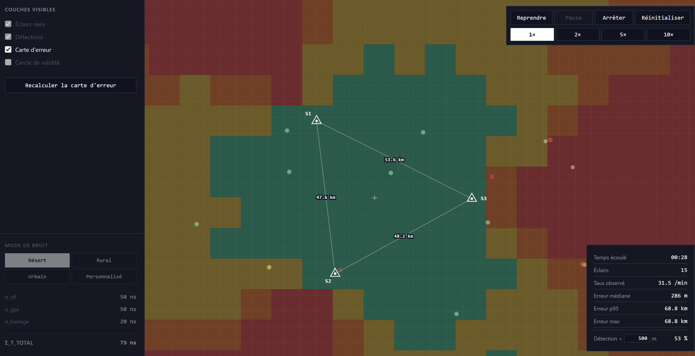

A motor-adaptation environment that works without instructions, for post-stroke rehabilitation research, driven by a five-finger isometric force sensor.
UnityC#Force sensorResearch
Portfolio
Engineering student (M2) — hardware, software and the prototype that connects the two.
Looking for a 6-month end-of-studies internship starting February 2027
A motor-adaptation environment that works without instructions, for post-stroke rehabilitation research, driven by a five-finger isometric force sensor.

An instrumented digital twin of a Norman bocage: testing whether data can reconcile ecology and economy. Playable in the browser (WebGL).

A modular lamp in laser-cut acrylic: five translucent petals you can reposition at will. Crowdfunding campaign funded at 337% of its goal.

A 100% local multi-agent AI system for R&D technology watch: no data leaves the machine, no change without human validation.

Simulation of a three-station VLF lightning detection network using TDOA multilateration, and a study of accuracy under controlled noise.
What interests me is the place where software logic meets physical reality. I come from rapid prototyping: I don't just model a solution, I build it, assemble it, code it and integrate it physically. That dual hardware/software skill lets me design interactive and embedded systems that hold up end to end.
What I enjoy most is taking a project from A to Z: spotting the problem, designing, prototyping, producing data, and ending up with a demonstrable MVP that genuinely helps solve it.
An M2 Creative Technology student at ESILV, I am looking for a 6-month end-of-studies internship starting February 2027, in R&D, hardware/software prototyping or creative tech.